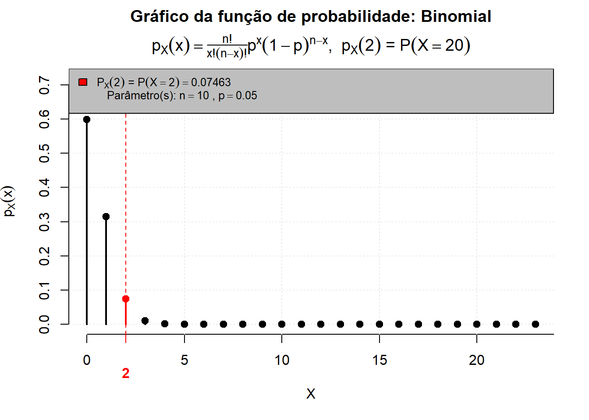
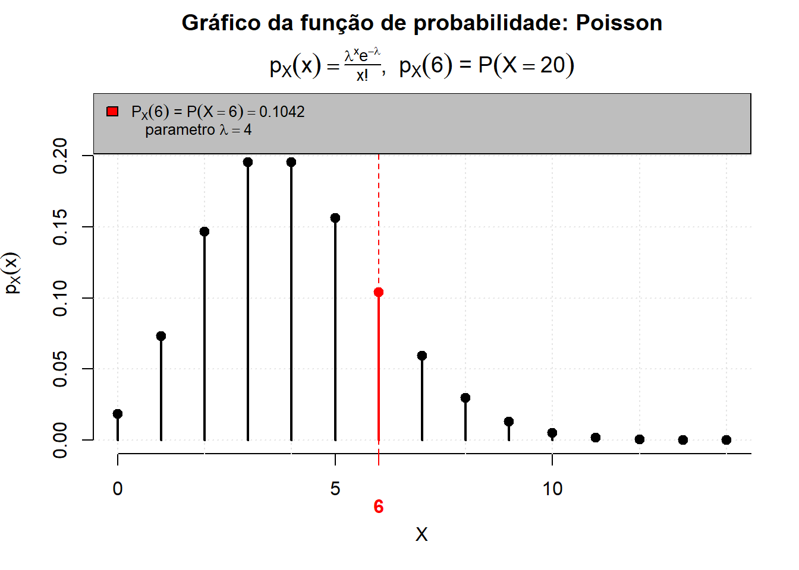
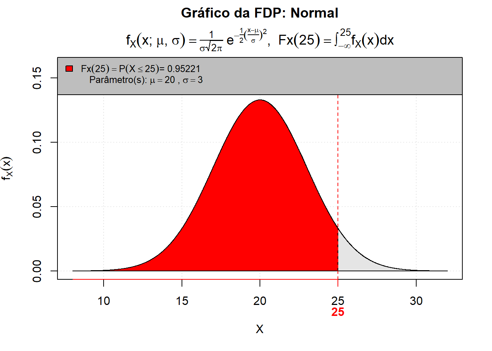
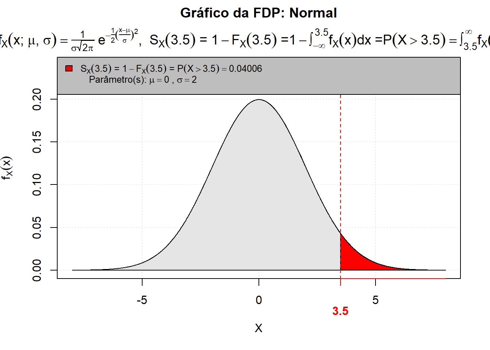

Código
dbinom(2, size = 10, prob = 0.05)[1] 0.0746348Estatística e Probabilidade
Prof. Ben Dêivide (DEFIM/CAP/UFSJ)
As distribuições de probabilidade desempenham um papel fundamental na estatística, pois permitem modelar matematicamente fenômenos aleatórios e descrever o comportamento de variáveis aleatórias.
Uma variável aleatória pode ser classificada como discreta ou contínua. Variáveis discretas assumem valores contáveis, enquanto variáveis contínuas podem assumir qualquer valor em um intervalo dos números reais.
Neste relatório serão abordadas algumas das distribuições de probabilidade estudadas em sala de aula, sendo elas, a distribuições Binomial, Poisson e Normal. Além da fundamentação teórica, serão apresentados exemplos aplicados, cálculos analíticos de probabilidades e implementações computacionais utilizando a linguagem R e o pacote leem.
Compreender o funcionamento das principais distribuições de probabilidade e suas aplicações em problemas estatísticos.
Nessa seção serão apresentados os conceitos teóricos sobre os 3 tópicos principais do relatório.
Vamos começar primeiramente descrevendo o que são variáveis aleatórias. Uma variável aleatória é uma função que associa valores numéricos aos resultados de um experimento aleatório. Em vez de lidarmos com descrições qualitativas como “cara” ou “coroa”, usamos números para que possamos calcular médias, variâncias e probabilidades.
As variáveis aleatórias podem ser classificadas em:
Variáveis Aleatórias Discretas:
São aquelas que assumem valores em um conjunto finito ou enumerável, como por exemplo: O resultado do lançamento de um dado. \(X\) pode ser \(\{1, 2, 3, 4, 5, 6\}\).
Exemplos Práticos: O número de bits errados que chegam em uma transmissão de dados,a quantidade de carros que passam por um pedágio em uma hora.
Variáveis Aleatórias Contínuas:
São aquelas que podem assumir qualquer valor dentro de um intervalo real. Elas geralmente representam medições. Exemplo: A altura de uma pessoa escolhida ao acaso. Ela não mede exatamente 1,75m ou 1,76m; ela pode medir \(1,75432...\) m.
Outros exemplos Práticos: O tempo que um componente eletrônico leva para falhar, a tensão exata em um terminal de um circuito ou a temperatura ambiente em um determinado instante.
A variável aleatória nos permite criar modelos matemáticos. Se estamos analisando o ruído em um sinal ou a resistência de um material, não conseguimos prever o valor exato de cada medição, mas podemos definir uma variável aleatória \(X\) que segue uma distribuição como a distribuição Normal ou a distribuição de Poisson. Com isso é possível responder perguntas do tipo:
“Qual é o valor médio esperado para essa medição após 1000 testes?”
Exemplo comparativo: Observação climática.
Evento: “Vai chover hoje?”
Variável aleatória discreta (Y): Definimos Y = 1 se chover e Y = 0 se não chover. Aqui, transformamos uma condição climática em um dado binário para cálculos estatísticos.
Variável aleatória contínua (W): Definimos W como a quantidade exata de milímetros de chuva acumulados. W pode ser qualquer valor maior ou igual a zero (Ex.: 12,5 mm).
Dessa forma, pode-se definir a variável aleatória como a ferramenta que extrai “ordem” do caos da incerteza. Permitindo que possamos usar o cálculo e a álgebra para prever comportamentos em sistemas complexos.
A distribuição Binomial é utilizada para modelar experimentos compostos por um número fixo de tentativas independentes, em que cada tentativa possui apenas dois resultados possíveis: sucesso ou fracasso.
Para que o fenomêno seja modelado por uma distribuição binomial, ele precisa seguir quatro condições:
Número fixo de tentativas (n): O experimento é repetido um número determinado de vezes.
Dois resultados possíveis: Cada tentativa só tem dois resultados, sucesso ou fracasso.
Probabilidade constante (p); A probabilidade de sucesso \(p\) é a mesma em cada tentativa. Logo, a de fracasso é: \[ q = 1 -p \]
Independência: O resultado de uma tentativa não afeta as outras.
Podemos definir portanto, a função de probabilidade pela expressão:
\[ P(X=x)=\binom{n}{x}p^x(1-p)^{n-x} \] Onde:
Parâmetros Importantes:
Se uma variável aleatória \(X\) segue uma distribuição binomial, denotamos como \(X \sim B(n, p)\). Suas medidas principais são:
Média (Valor Esperado): \(E[X] = n \cdot p\)
Variância: \(Var(X) = n \cdot p \cdot (1 - p)\)
Exemplo Prático: Se você sabe que 5% de uma produção de chips eletrônicos sai com defeito e você testa 100 chips, a média esperada de defeitos é \(100 \times 0,05 = 5\) chips.
Por fim, como a distribuição binomial possui relevância em diversas áreas, inclusive na Engenharia de Telecomunicações. Podemos citar aplicações da binomial nessa área, por exemplo, na análise de sistemas de comunicação. Esses exemplos são:
Transmissão de dados: Pode ser usada para calcular a probabilidade de um pacote de bits chegar com erro através de um canal ruidoso.
Segurança de sistemas: Pode ser usada para calcular a probabilidade de um sistema com redundância falhar. Por exemplo, um servidor que precisa que pelo menos 2 de 3 fontes de energia funcionem.
Exemplo aplicado em Telecomunicações:
Em uma transmissão digital, cada pacote de dados possui 5% de chance de apresentar erro durante o envio.
Deseja-se calcular a probabilidade de exatamente 2 pacotes apresentarem erro em um conjunto de 10 pacotes transmitidos. Usando a fórmula apresentada anteriormente temos:
\[ P(X=x)=\binom{n}{x}p^x(1-p)^{n-x} \] \[ P(X=2)=\binom{10}{2}(0.05)^2(0.95)^8 \]
dbinom(2, size = 10, prob = 0.05)[1] 0.0746348O resultado representa a probabilidade de exatamente dois pacotes apresentarem erro durante a transmissão.
Agora, usando o pacote leem para a resolução do problema:
library(leem)
P(q = 2,
dist = "binomial",
size = 10,
prob = 0.05,
lower.tail = NULL
)
[1] 0.07463A função P() do pacote leem foi utilizada para calcular probabilidades da distribuição Binomial.
Onde:
q = 2 representa o número de sucessos desejados.
size = 10 representa o número total de transmissões.
prob = 0.05 representa a probabilidade de erro.
Enquanto a Distribuição Binomial foca no número de sucessos em tentativas fixas, a distribuição de Poisson olha para a frequência de ocorrências em um intervalo contínuo, seja ele tempo, área, volume ou distância. É a distribuição ideal para modelar eventos que são relativamente raros ou que ocorrem de forma aleatória e independente.
Para que um fenômeno siga essa distribuição, ele deve respeitar alguns critérios:
Independência: A ocorrência de um evento não altera a probabilidade de outro ocorrer.
Taxa constante (\(\lambda\)): O número médio de ocorrências por intervalo é conhecido e estável.
Singularidade: A probabilidade de dois eventos ocorrerem exatamente ao mesmo tempo e no mesmo ponto é desprezível, ou seja, tende a zero.
Podemos definir portanto, a função de probabilidade pela expressão:
\[ P(X=x)=\frac{e^{-\lambda}\lambda^x}{x!} \]
Onde:
Uma propriedade característica e muito útil da distribuição de Poisson é que sua média e a sua variância são iguais:
\[E[X] = Var(X) = \lambda\]
Exemplos práticos e aplicações:
A Poisson é de grande utilidade para quem trabalha com modelagem de sistemas. Na área da Engenharia de Telecomunicações podemos citar casos de aplicações como:
O número de pacotes de dados que chegam a um roteador em 1 ms(milissegundo).
Ou também, o número de falhas ou “bugs” encontrados em uma extensão de código de software ou em uma linha de produção.
Portanto, na prática, a Poisson é frequentemente usada como uma aproximação da Binomial quando o número de tentativas \(n\) é muito grande e a probabilidade de sucesso \(p\) é muito pequena (geralmente \(n \ge 20\) e \(np \le 5\)). Nesse caso, usamos \(\lambda = n \cdot p\). É muito mais fácil calcular o fatorial de um número pequeno do que lidar com coeficientes binomiais gigantescos.
Considere que uma central de telecomunicações receba, em média, 4 chamadas por minuto.
Deseja-se calcular a probabilidade de ocorrerem exatamente 6 chamadas em um determinado minuto. Usando a fórmula apresentada anteriormente temos:
\[ P(X=x)=\frac{e^{-\lambda}\lambda^x}{x!} \]
\[ P(X=6)=\frac{e^{-4}4^6}{6!} \]
dpois(6, lambda = 4)[1] 0.1041956O valor obtido representa a probabilidade de uma central receber exatamente seis chamadas em um minuto.
Agora, usando o pacote leem para a resolução do problema:
library(leem)
P(q = 6,
dist = "poisson",
lambda = 4,
lower.tail = NULL
)
[1] 0.1042Na distribuição de Poisson temos que:
q = 6 representa o número de ocorrências.
lambda = 4 representa a média de chamadas por minuto.
A Distribuição Normal, também conhecida como Distribuição Gaussiana, é indiscutivelmente a distribuição mais importante da estatística e das ciências exatas. Ela descreve fenômenos onde os valores tendem a se agrupar em torno de uma média central, tornando-se cada vez mais raros à medida que se afastam dela.
Visualmente, ela forma a famosa curva em sino.
Diferente das distribuições Binomial e de Poisson, a Normal é uma variável aleatória contínua. Sua Função Densidade de Probabilidade (PDF) é definida por: \[f(x) = \frac{1}{\sigma \sqrt{2\pi}} e^{-\frac{1}{2}\left(\frac{x-\mu}{\sigma}\right)^2}\] Onde os dois parâmetros fundamentais são:
\(\mu\) (Média): Determina o centro da curva (o pico).
\(\sigma\) (Desvio Padrão): Determina a dispersão ou “largura” do sino. Quanto maior o \(\sigma\), mais achatada é a curva.
Outra propriedade muito importante da Distribuição Normal é a simetria. A curva é perfeitamente simétrica em relação à média. Isso implica que a média, a mediana e a moda são iguais.
Partindo agora para outro conceito muito relevante, temos o Teorema Central do Limite (TCL):
Por que a Distribuição Normal aparece em quase tudo? A resposta é o Teorema Central do Limite.
Ele afirma que, quando somamos ou tiramos a média de um grande número de variáveis aleatórias independentes (não importa qual seja a distribuição original delas), o resultado tende a uma Distribuição Normal à medida que o número de observações aumenta.
É por isso que erros de medição, ruídos térmicos em circuitos eletrônicos e variações biológicas seguem esse padrão: eles são a soma de múltiplos pequenos efeitos aleatórios.
Distribuição Normal Padrão (\(Z\)) Para facilitar cálculos e consultas em tabelas, utilizamos a Padronização. Transformamos qualquer variável \(X \sim N(\mu, \sigma^2)\) em uma variável \(Z \sim N(0, 1)\) usando a fórmula: \[Z = \frac{X - \mu}{\sigma}\] Isso nos diz a quantos desvios padrões um valor específico está da média, permitindo comparar escalas diferentes (como comparar a altura de pessoas com o peso de componentes).
Exemplos práticos e aplicações:
Processamento de Sinais: Filtros gaussianos usados para suavizar imagens ou sinais ruidosos.
Análise de Dados: Muitos testes estatísticos (como o teste t) pressupõem que os dados seguem uma distribuição normal.
Exemplo aplicado em Telecomunicações:
O tempo de atraso (latência) de um sinal em uma rede possui distribuição Normal, com média de 20 ms e desvio padrão de 3 ms.
Deseja-se calcular a probabilidade da latência ser inferior a 25 ms. Usando a fórmula apresentada anteriormente temos:
\[ f(x)=\frac{1}{\sigma\sqrt{2\pi}}e^{-\frac{(x-\mu)^2}{2\sigma^2}} \] Transformação:
\[ Z=\frac{25-20}{3} \] \[ Z\approx 1.67 \] Probabilidade em Z:
\[ P(0<= Z <= 1.67) \] Usando a Tabela A 1: Distribuição normal padronizada, temos: \[ 0.4525 \]
Resultado: \[ P(X<25)=P(Z<1.67) \] \[ 0.5000 + 0.4525 = 0.9525 \] \[ P(X<25)\approx 0.9525 \]
Portanto, observa-se que a probabilidade obtida representa o comportamento esperado do fenômeno analisado no contexto das telecomunicações.
Com isso, concluimos que, a compreensão da Normal é o que permite transitar da estatística descritiva para a estatística inferencial de alto nível.
Agora, usando o pacote leem para a resolução do problema:
library(leem)
P(q = 25,
dist = "normal",
mean = 20,
sd = 3,
lower.tail = TRUE
)
[1] 0.95221Na distribuição Normal temos que:
q = 25 representa o valor analisado.
mean = 20 representa a média.
sd = 3 representa o desvio padrão.
lower.tail = TRUE indica a área acumulada à esquerda.
Para essa seção de aprofundamento, vamos explorar quatro distribuições fundamentais, divididas entre discretas e contínuas, todas com aplicações diretas no universo da Engenharia de Telecomunicações.
1.1 Distribuição Binomial
Modela o número de sucessos em uma sequência de \(n\) tentativas independentes, onde cada tentativa tem uma probabilidade \(p\) de sucesso. Em telecomunicações, é amplamente usada para calcular a probabilidade de erros em pacotes de bits (Bit Error Rate - BER).
Cálculo Analítico:
Queremos calcular \(P(X = 2)\) para \(n = 8\) e \(p = 0,1\). A fórmula é: \[P(X = k) = \binom{n}{k} p^k (1-p)^{n-k}\] Substituindo os valores: \[P(X = 2) = \binom{8}{2} (0,1)^2 (1-0,1)^{8-2}\] \[P(X = 2) = \frac{8!}{2!(8-2)!} \cdot 0,01 \cdot (0,9)^6\] \[P(X = 2) = 28 \cdot 0,01 \cdot 0,531441 \approx 0,1488 \text{ ou } 14,88\%\] Solução em R:
# Parâmetros
n <- 8
p <- 0.1
k <- 2
# Cálculo da probabilidade exata (dbinom = density da binomial)
prob_binomial <- dbinom(x = k, size = n, prob = p)
print(prob_binomial)[1] 0.1488035# Saída esperada: 0.14880351.2 Distribuição de Poisson
Modela a probabilidade de um número específico de eventos ocorrerem em um intervalo fixo (de tempo ou espaço), assumindo uma taxa média de ocorrência conhecida (\(\lambda\)) e que os eventos são independentes. É o padrão-ouro para o dimensionamento de tráfego (Teoria das Filas) em roteadores e centrais telefônicas.
Cálculo Analítico: A fórmula da distribuição de Poisson é: \[P(X = k) = \frac{e^{-\lambda} \lambda^k}{k!}\] Substituindo \(\lambda = 4\) e \(k = 6\): \[P(X = 6) = \frac{e^{-4} \cdot 4^6}{6!}\] \[P(X = 6) = \frac{0,018315 \cdot 4096}{720} \approx 0,1042 \text{ ou } 10,42\%\]
2.1 Distribuição Normal (Gaussiana)
Um dos exemplos mais clássicos e fundamentais da Distribuição Normal na Engenharia de Telecomunicações é a modelagem de ruído elétrico, especificamente o Ruído Branco Aditivo Gaussiano (AWGN).
Em receptores de comunicação, o movimento térmico dos elétrons nos componentes (como resistores) gera uma voltagem de ruído aleatória. Essa voltagem flutua em torno de zero (não tem corrente contínua) e segue perfeitamente uma curva gaussiana.
Ruído Térmico (AWGN) em um Receptor
Em um receptor de rádio, a tensão instantânea do ruído térmico em um circuito segue uma distribuição normal com média \(\mu = 0\) mV (milivolts) e desvio padrão \(\sigma = 2\) mV (que representa o valor RMS do ruído). Para que o sistema confunda um bit “0” com um bit “1” (gerando um erro de leitura), um pico de tensão de ruído precisa ultrapassar um limiar de decisão de \(3,5\) mV.
Qual é a probabilidade de, em um dado instante, a tensão do ruído exceder esse limiar de \(3,5\) mV e potencialmente causar um erro?
Cálculo Analítico:Queremos calcular a probabilidade de a tensão ser maior que o limiar:\(P(X > 3,5)\). Padronização para \(Z\): \[Z = \frac{X - \mu}{\sigma}\] \[Z = \frac{3,5 - 0}{2} = 1,75\] Isso significa que o limiar está a \(1,75\) desvios padrões acima da média.
Uso da Tabela: Queremos a probabilidade de \(Z > 1,75\). Como a curva inteira soma \(1\) (ou \(100\%\)), e a tabela padrão da Normal geralmente nos dá a área da esquerda até o valor \(Z\) (ou seja, \(P(Z < 1,75)\)), calculamos: \[P(Z > 1,75) = 1 - P(Z < 1,75)\] Consultando a tabela da distribuição normal padrão para \(Z = 1,75\), encontramos o valor de aproximadamente \(0,9599\). \[P(Z > 1,75) = 1 - 0,9599 = 0,0401\] Resultado: A probabilidade de o ruído ultrapassar o limiar em um dado instante é de \(4,01\%\).
Solução em R:
No R, podemos calcular isso de forma direta. A função pnorm nos dá a probabilidade acumulada. Para pegar a cauda superior (valores maiores que o alvo), usamos o argumento lower.tail = FALSE (ou fazemos 1 - pnorm(…)).
# Parâmetros do ruído
media <- 0
desvio_padrao <- 2
limiar_tensao <- 3.5
# Cálculo da probabilidade de exceder o limiar (cauda superior da curva)
prob_erro <- pnorm(q = limiar_tensao, mean = media, sd = desvio_padrao, lower.tail = FALSE)
print(prob_erro)[1] 0.04005916# Saída esperada: 0.04005916Com o pacote leem:
library(leem)
# Probabilidade do ruído exceder o limiar
P(q = 3.5,
dist = "normal",
mean = 0,
sd = 2,
lower.tail = FALSE
)
[1] 0.04006A função P() do pacote leem foi utilizada para calcular probabilidades da distribuição Normal.
Onde: - q = 3.5 representa o limiar de tensão.
mean = 0 representa a média do ruído.
sd = 2 representa o desvio padrão.
lower.tail = FALSE indica que deseja-se calcular a área à direita da curva, ou seja, valores maiores que 3,5 mV.
Neste contexto, esses \(\approx 4\%\) representam uma taxa inaceitável para sistemas modernos (significaria que a cada 100 leituras, 4 teriam potencial para erro). Na prática, engenheiros projetam os sistemas aumentando a potência do sinal (afastando o limiar da média do ruído) para que esse valor \(Z\) seja muito maior (como \(Z=6\) ou \(Z=7\)), empurrando a probabilidade de erro para a casa de um em um bilhão (\(10^{-9}\)).
2.2 Distribuição Exponencial
Modela o tempo entre eventos em um processo de Poisson. Em telecomunicações, é amplamente utilizada para modelar o tempo entre as chegadas de chamadas, o tempo de serviço em um servidor, ou o Tempo Médio Entre Falhas (MTBF) de equipamentos de rede.
Exemplo em Telecomunicações: A vida útil de um módulo transceptor óptico possui uma taxa de falha de \(\lambda = 0,5\) falhas por ano (o que equivale a um MTBF de 2 anos). Qual é a probabilidade do componente falhar antes de completar 1 ano de uso?
Cálculo Analítico:
Queremos a probabilidade acumulada \(P(X \le 1)\). A Função de Distribuição Acumulada (CDF) da distribuição exponencial é: \[P(X \le x) = 1 - e^{-\lambda x}\] Substituindo \(\lambda = 0,5\) e \(x = 1\): \[P(X \le 1) = 1 - e^{-0,5 \cdot 1}\] \[P(X \le 1) = 1 - e^{-0,5}\] \[P(X \le 1) \approx 1 - 0,6065 \approx 0,3935 \text{ ou } 39,35\%\] Solução em R:
# Parâmetros
taxa_falha_lambda <- 0.5
tempo_x <- 1
# Cálculo da probabilidade acumulada (pexp = probability da exponencial)
prob_exponencial <- pexp(q = tempo_x, rate = taxa_falha_lambda)
print(prob_exponencial)[1] 0.3934693# Saída esperada: 0.3934693A análise apresentada neste relatório demonstra que as distribuições de probabilidade são ferramentas indispensáveis para a modelagem, avaliação e otimização de sistemas na Engenharia de Telecomunicações. Longe de serem apenas abstrações teóricas, esses modelos fornecem a base quantitativa necessária para que se possa lidar com a incerteza e a variabilidade inerentes às redes de comunicação.
Ao explorar variáveis aleatórias discretas, observou-se como a Distribuição Binomial é crucial para o cálculo e previsão de taxas de erro em blocos de dados (BER), enquanto a Distribuição de Poisson se destaca no dimensionamento de tráfego, permitindo prever o fluxo de pacotes em roteadores e evitar gargalos. Por outro lado, as variáveis contínuas expandem essa capacidade analítica: a Distribuição Normal provou ser o modelo definitivo para caracterizar ruídos térmicos (AWGN) e flutuações de latência, e a Distribuição Exponencial mostrou-se vital para a engenharia de confiabilidade, ajudando a prever falhas em componentes físicos e estimar o tempo médio entre falhas (MTBF).
Além da robustez das formulações analíticas, a integração dessas distribuições com ferramentas computacionais, como a linguagem R, ilustra a transição da estatística descritiva para a engenharia aplicada. A capacidade de programar, simular e calcular essas probabilidades em software é o que viabiliza a tomada de decisões técnicas embasadas em dados, permitindo projetar redes mais eficientes, estabelecer limiares seguros de operação e garantir a Qualidade de Serviço (QoS) exigida pelas aplicações modernas.
Portanto, o domínio destes modelos probabilísticos em conjunto com a sua execução computacional compõe um repertório técnico essencial. Essa união capacita a previsão do comportamento de sistemas complexos sob condições de incerteza.
BEN DÊIVIDE. Estatística & Probabilidade aplicada às Engenharias e Ciências. Disponível em: https://bendeivide.github.io/book-epaec/cap06.html.
BEN DÊIVIDE. Estatística Básica. Disponível em: https://bendeivide.github.io/book-estbasica/cap06.html.